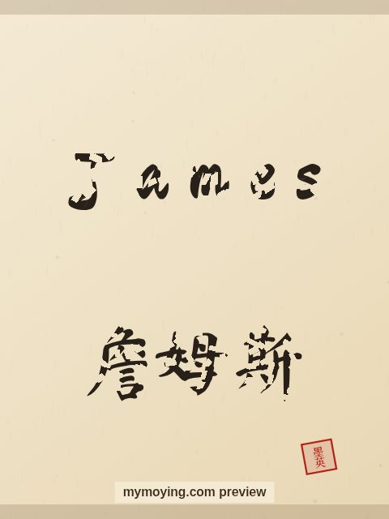

James in Chinese Calligraphy
A brush-drawn preview of James, with the Chinese characters 詹姆斯 (Zhān mǔ sī) and a note on what the name means.

Sample. “James” in the Regular (楷书) brush style with the Chinese name 詹姆斯 (Zhān mǔ sī). The paid file removes the watermark.
The Chinese characters for James
As a transliteration, James is usually written 詹姆斯 (Zhān mǔ sī). Each character is listed below with its own dictionary meaning — the name is chosen by sound, not by meaning, and Moying does not translate names. Please have a person review the characters before any permanent use such as a tattoo.
Origin and meaning
James comes from Hebrew and means “supplanter (form of Jacob)”.
About the name James
Carried by King James I of England, who commissioned the King James Bible.
As a gift or a tattoo
Because it means “supplanter (form of Jacob)”, a James calligraphy print makes a thoughtful gift for someone who loves the name or its meaning.
Open James in the generatorFree watermarked preview. $1.99 once for a clean high-resolution download of this name in every style and setting. No subscription. Digital product, delivered instantly; see Terms.